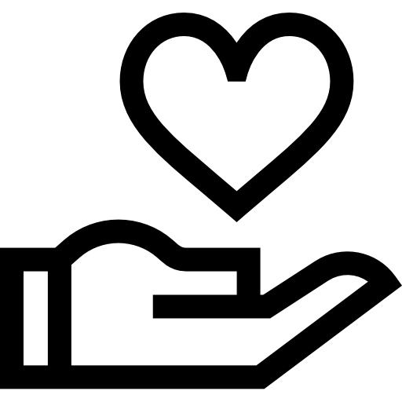

Plataforma Integrada para Eventos Extremos
Monitoramento em tempo real, doações, voluntariado, apoio via chatbot, recursos e abrigos disponíveis para proteger vidas e fortalecer comunidades.

Ajude a Salvar Vidas
Com sua doação, podemos expandir nossos recursos e alcançar mais pessoas em situações de emergência em todo o mundo.
Faça uma DoaçãoComo Pedir Socorro
Saiba como acionar ajuda em situações de risco. Clique aqui para ver os contatos e orientações úteis globalmente.
Pedir SocorroSeja voluntário
Ajude em abrigos, centros de triagem ou remotamente. Toda ajuda é importante.
Cadastre-se
Chatbot Inteligente
Assistente virtual para orientação, primeiros socorros e informações durante desastres.
Acesse-o via TelegramMonitoramento em Tempo Real
Dados de satélites, sensores IoT e meteorologia para alertas rápidos e precisos.
Saiba mais
Recursos e Abrigos Disponíveis
Saiba quais abrigos e recursos estão disponíveis na sua região com apenas um clique.
Saiba mais